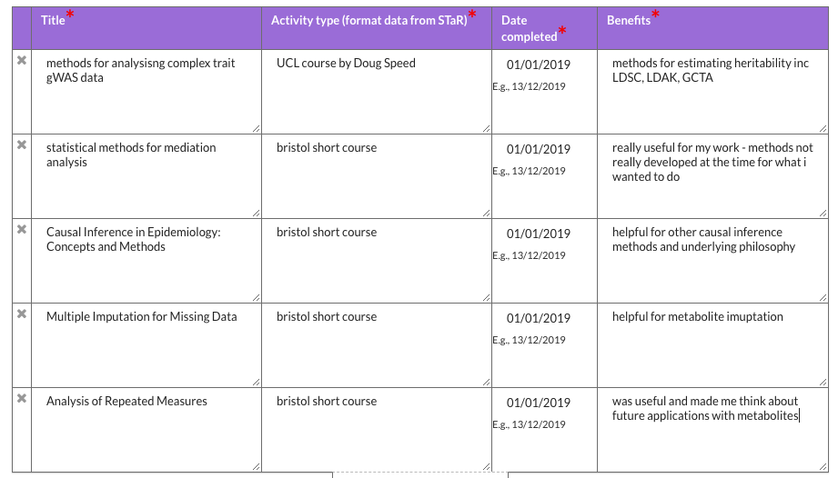

Annual review: year2
1 STaR report
1.1 Introduction
1.1.1 Title
What lies behind the causal impact of body mass index (BMI) level and change on human health? Added value from complementary study design and deep metabolomic phenotyping
1.1.2 Maximum submission date
03/10/2021
1.2 Looking back
1.2.1 Research progress
- we have a paper in review at HMG on a GWAS of glycosuria in ALSPAC and NFBC - this is the 3rd review
- chapter 1: an introduction and background chapter - almost completed
- chapter 2: a systematic review of ~150 papers - in the data extraction stages with an aim of finishing entirely by end of February
- chapter 3: about instrumenting adiposity and will be small - partially started
- chapter 4: observational work - yet to be started
- chapter 5: the first step of an two step MR - all analysis done
- chapter 6: visualisation of large MR analysis i.e. chapter 5 - needs finishing off and writing up
- chapter 7/8: how to cluster metabolites and what rules to make for instrumenting these clsuters - yet to start
- chapter 9: second step of the two step MR - have the analysis pipeline worked out
- chapter 10: discussion/conclusion
1.2.1.1 Personal and professional development

Figure 1: Proportion of overweight individuals
1.2.1.2 Presenting your research
I have presented my work at the following:
- Faculty of Health Sciences reserach showcase, presentation - Metabolite profiles as markers of risk
- Faculty of Health Sciences reserach showcase, poster - Metabolite profiling of multiple measures of adiposity: A Mendelian randomization analysis
- Metabolomics 2019, poster - Metabolite profiling of multiple measures of adiposity: A Mendelian randomization analysis
- MR conference 2019, poster - MR-Vis: A tool for the visualisation of high-dimensional Mendelian randomization results
1.2.1.3 Public engagement and outreach
I’ve done much less than last year:
- Creative Reactions, lead - 50 artists and 50 reserachers with > 5,000 visitors
- Creative Reactions, participated - research turned into an artwork
- Talks - have given a number of talks to the public
- MRC IEU @ Greenman
- ~£20,000 in grants awarded in review period (including £14,985 from the EPSRC)
- Nic and I are writing an application to the Wellcome Trust to fund a public engagement project for the reserach group for ~£50,000
- I am working with a reserach fellow in Maths on a bid to Arts Council England for ~£50,000 - supported by Head of the School of Arts and Maths and PHSI (Caroline)
1.2.1.4 Teaching
I have taught on the following:
- Mendelian randomization, Bristol Medical School short course
- Mendelian randomization conference MR course, conference workshop
- Introduction to R, Bristol Medical School short course
- Introduction to data visualisation and web applications using R, Bristol Medical School short course
- A one week course at the University of Pavia: Causal Inference and Mendelian randomization, Department of Brain and Behavioural Sciences, University of Pavia, Italy
1.2.1.5 Summary / further comments
We are hoping to get funding for me to do a placement with Ruth Loos at Mount Sinai, New York to work on a body fat genetics project - this funding will cover an extension to my PhD.
1.3 Planning ahead
1.3.1 Research objectives
Over the next year my main objectives are:
- Get glycosuria GWAS paper published!
- Finish systematic review
- Finish chapters 1-6 entirely including all writing analysis and any manuscripts from this work
- Complete one clustering analysis and begin work on a second and third (chapters 7 and 8)
In the final 6 months:
- Finish chapters 7 and 8
- Finish chapter 9
- Finish chapter 10
- Submit
1.3.1.1 Planned training and development
I am booked onto the Prediction short course at Bristol. I hope to do a placement at Mount Sinai with Ruth Loos
1.3.1.2 Communicating your reserach
- Systematic review - publication
- MR Vis - R package, web application, publication
- metabolite MR work - poster/presentation at Metabolomics 2020 and IGES 2020
- if the palcement goes ahead Ruth has suggested this would probably lead to a paper